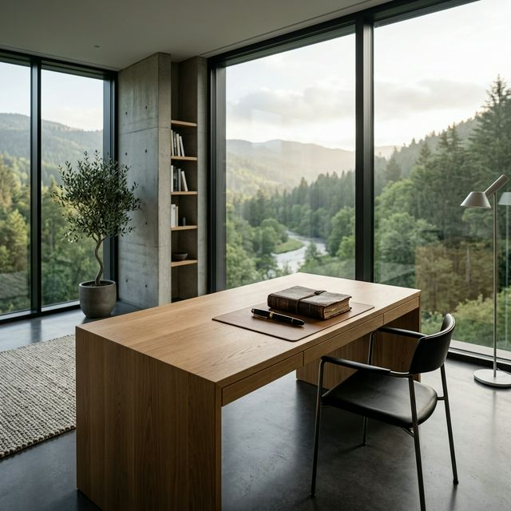
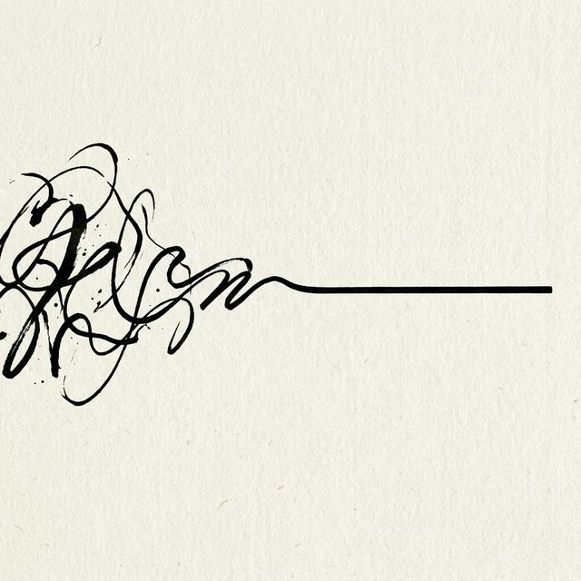
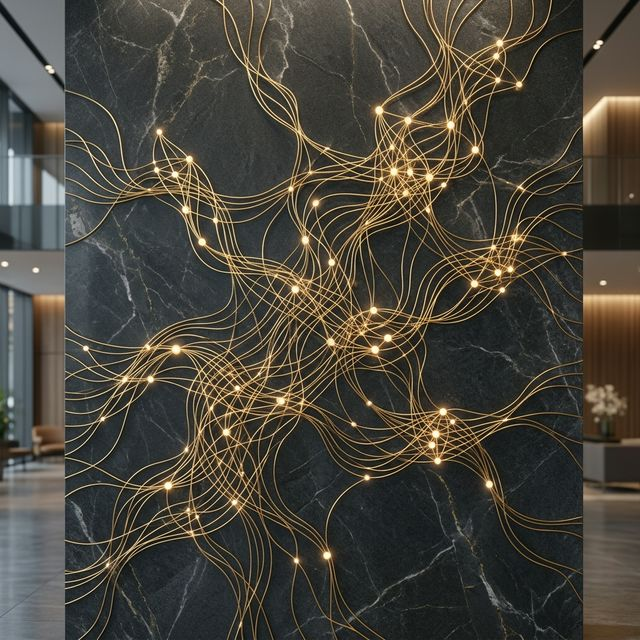

Minimalist editorial support for global visionaries, entrepreneurs, and thinkers who refuse to be forgotten.

I conduct a series of strategic interview blocks to pull the essence of your intellectual contribution into a structured data set.
Your book is architected using the same principles as classic non-fiction bestsellers, ensuring a logical, high-impact arc.
The first manuscript is penned in a closed cycle, mirroring your syntax and vocabulary patterns with surgical precision.
High-end line editing and thematic auditing ensure the final work is ready for premium traditional publishing markets.
— Julian Thorne
The journey from a silent concept to a published masterpiece is structured, intentional, and confidential.

Weeks 1-3. Establishing the vision, defining the target audience, and creating the master manuscript roadmap.
Weeks 4-16. Intensive interview sessions (10-15 hours) and drafting of the core manuscript sections.
Weeks 17-22. Multistage review process, developmental editing, and legal/thematic accuracy checks.

A comprehensive 80,000-word book for a Silicon Valley CEO that defined the next decade of ethical technology leadership. Debuted at #3 on the Wall Street Journal bestseller list.
View MethodologyA private family history commissioned by a European industrial dynasty. A strictly confidential project focusing on 200 years of entrepreneurial heritage preserved for descendants.
Request SamplesYour narrative is already there, waiting to be extracted from the noise of your success. I provide the artisan's touch to forge it into a legacy that breathes.